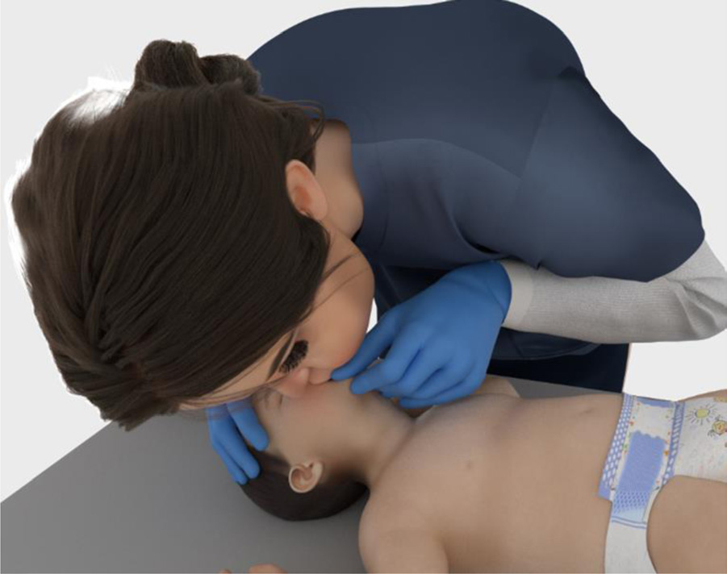
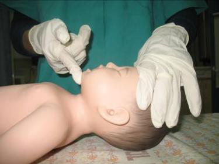

זיהוי מצוקה וכשל · 4 סוגי ההפרעה · ייצוב ראשוני · טיפול באסתמה וגוף זר
Distress vs failure · 4 problem types · initial stabilization · asthma & FBAO
מבוסס על חומרי MSR ("זיהוי וטיפול במצבי חירום נשימתיים") ועל AHA PALS 2025.
מצבי חירום נשימתיים הם השכיחים ביותר בילדים והסיבה מספר 1 לאשפוז ותמותה. לילד צריכת חמצן גבוהה (תינוק ≈8 מ"ל/ק"ג/דקה לעומת 3–4 במבוגר), ולכן מצוקה — גם קלה — עלולה להידרדר לדום נשימה ← דום לב. ככל שהזיהוי והטיפול מוקדמים יותר, כך גדלים סיכויי הילד.
Respiratory emergencies are the most common in children and the #1 cause of admission and death. Children have high O₂ demand (infant ≈8 mL/kg/min vs 3–4 in adults), so even mild distress can progress to respiratory arrest → cardiac arrest. Earlier recognition and treatment improve outcomes.
ברדיקרדיה בילד היפוקסי היא סימן מבשר לדום לב — חמצון ואוורור מיידיים.
Bradycardia in a hypoxic child heralds cardiac arrest — oxygenate and ventilate immediately.
| מצוקה נשימתית | כשל נשימתי | |
|---|---|---|
| A · נתיב אוויר | פתוח וניתן לשמירה | אינו ניתן לשמירה |
| B · נשימה | טכיפנאה, מאמץ מוגבר, כניסת אוויר עם קולות | ברדיפנאה/אפנאה, מאמץ מופחת, כניסת אוויר ירודה |
| C · מחזור | טכיקרדיה, חיוורון | ברדיקרדיה, ציאנוזיס |
| D · הכרה | אי-שקט, חרדה | בלבול, אפאטיות, חוסר הכרה |
| E · חום | טמפרטורה משתנה | |
| Respiratory distress | Respiratory failure | |
|---|---|---|
| A · Airway | Patent & maintainable | Not maintainable |
| B · Breathing | Tachypnea, increased effort, air entry with sounds | Bradypnea/apnea, decreased effort, poor air entry |
| C · Circulation | Tachycardia, pallor | Bradycardia, cyanosis |
| D · Disability | Restlessness, anxiety | Confusion, apathy, unconsciousness |
| E · Exposure | Variable temperature | |
הטיפול הראשוני לייצוב דומה בכל הסוגים; לאחר הייצוב — טיפול ספציפי לפי האבחנה.
Initial stabilization is similar for all types; after stabilization — specific treatment per diagnosis.
הטיפול הראשוני מתאים לכל סוגי ההפרעות והוא הקריטי ביותר מחוץ לבית החולים. קראו לעזרה מתקדמת מוקדם.
Initial stabilization fits all problem types and is the most critical step out of hospital. Call for advanced help early.


| חומרה | טיפול |
|---|---|
| קל–בינוני | חמצן בריכוז גבוה (נטר לפי סטורציה) · Ventolin באינהלציה (<20 ק"ג: 2.5 מ"ג; ≥20 ק"ג: 5 מ"ג) + סליין עד 3 מ"ל, חזרה כל 20 דק' · קורטיקוסטרואידים PO · העברה מהירה |
| בינוני–קשה | כנ"ל + Aerovent (Ipratropium) 0.25 מ"ג · גישה ורידית · סטרואידים PO/IV (Solumedrol 2 מ"ג/ק"ג) · שקול מגנזיום 20–50 מ"ג/ק"ג למשך 15 דק' (ניטור ל"ד; לא בל"ד נמוך) |
| לקראת כשל נשימתי | כנ"ל + סיוע נשימתי באמבו ומסכה · שקול Epinephrine 1:1000 0.01 מ"ג/ק"ג IM (מקס' 0.3 מ"ג) · שקול מגנזיום · העברה דחופה |
| Severity | Treatment |
|---|---|
| Mild–moderate | High-flow O₂ (titrate to SpO₂) · nebulized albuterol (<20 kg: 2.5 mg; ≥20 kg: 5 mg) + saline to 3 mL, repeat q20 min · PO corticosteroids · prompt transfer |
| Moderate–severe | As above + ipratropium 0.25 mg · IV access · PO/IV steroids (methylprednisolone 2 mg/kg) · consider magnesium 20–50 mg/kg over 15 min (monitor BP; not if hypotensive) |
| Approaching failure | As above + bag-mask ventilatory support · consider epinephrine 1:1000 0.01 mg/kg IM (max 0.3 mg) · consider magnesium · urgent transfer |
פירוט מלא במודול 1 (BLS).
Full detail in Module 1 (BLS).